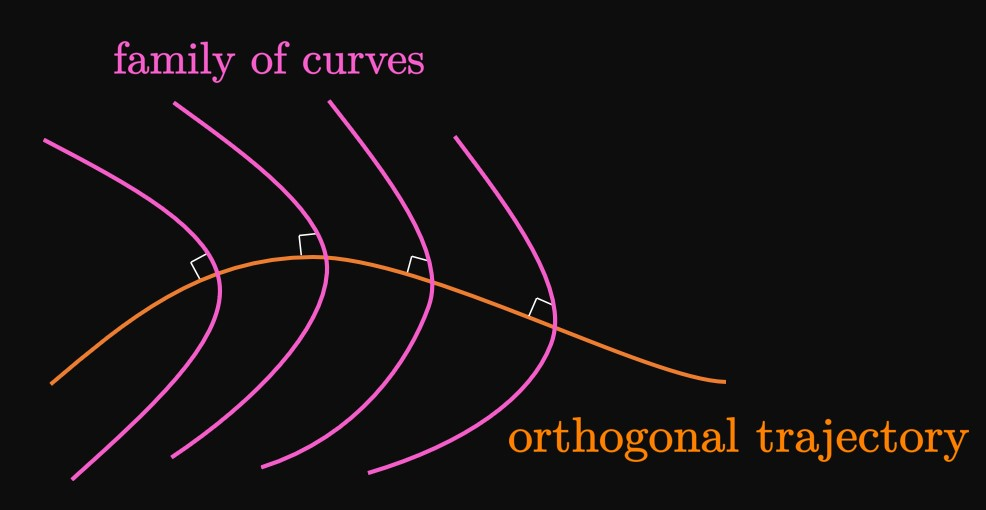

We have interpreted differential equations
and verified whether a function satisfies a differential equation.
In this section, we find functions that satisfy a differential equation;
this procedure is called solving a differential equation.
We discuss the following topics:
A separable differential equation
is a first-order differential equation in the form
\begin{equation}
\deriv{y}{x} = \frac{g(x)}{h(y)} \pd \label{eq:sep-diff-eq}
\end{equation}
We isolate the \(y\) terms on one side and all the \(x\) terms on the other;
this procedure is called solving by Separation of Variables.
In \(\eqref{eq:sep-diff-eq},\) multiplying both sides by \(h(y) \di x\) gives
\[h(y) \di y = g(x) \di x \pd\]
We then take the integral of both sides:
\begin{equation}
\int h(y) \di y = \int g(x) \di x \pd \label{eq:sep-diff-eq-int}
\end{equation}
The differential equation in \(\eqref{eq:sep-diff-eq}\) is solved by
\(\eqrefer{eq:sep-diff-eq-int}.\)
SEPARATION OF VARIABLES
A separable differential equation is of the form
\begin{equation*}
\deriv{y}{x} = \frac{g(x)}{h(y)} \pd \eqlabel{eq:sep-diff-eq}
\end{equation*}
Separation of Variables gives the following solution
to the differential equation:
\begin{equation*}
\int h(y) \di y = \int g(x) \di x \pd \eqlabel{eq:sep-diff-eq-int}
\end{equation*}
PROOF
To prove the validity of Separation of Variables, we must show that
\(\eqref{eq:sep-diff-eq-int}\) satisfies \(\eqref{eq:sep-diff-eq}.\)
Let's perform Implicit Differentiation (from Section
2.5)
on \(\eqref{eq:sep-diff-eq-int} \col\)
We differentiate both sides with respect to \(x,\)
use the Chain Rule on the left side, and solve for \(\textderiv{y}{x}.\)
Doing so shows
\[
\ba
\deriv{}{x} \int h(y) \di y &= \deriv{}{x} \int g(x) \di x \nl
\deriv{}{y} \par{\int h(y) \di y} \deriv{y}{x} &= g(x) \nl
h(y) \deriv{y}{x} &= g(x) \pd
\ea
\]
Then we find \(\textDeriv{y}{x} = g(x)/h(y),\) which is \(\eqref{eq:sep-diff-eq}.\)
Hence, \(\eqref{eq:sep-diff-eq-int}\) satisfies \(\eqref{eq:sep-diff-eq};\)
Separation of Variables is therefore justifiable.
\[\qedproof\]
EXAMPLE 1
Find the general solution to the differential equation \(\textDeriv{y}{x} = 2x/y^2.\)
This differential equation is separable because we can isolate all the \(y\)'s
on one side and all the \(x\)'s on the other.
Multiplying both sides by \(y^2 \di x\) gives
\[y^2 \di y = 2x \di x \pd\]
Now we integrate both sides, as follows:
\[
\ba
\int y^2 \di y &= \int 2x \di x \nl
\tfrac{1}{3} y^3 + C_1 &= x^2 + C_2 \cma
\ea
\]
where \(C_1\) and \(C_2\) are both arbitrary constants.
But for simplicity, we combine these constants into one
by letting \(C = C_2 - C_1.\)
We therefore have
\[\tfrac{1}{3} y^3 = x^2 + C \pd\]
Finally, we solve for \(y \col\)
\[y = \sqrt[3]{3x^2 + 3C} \pd\]
Since \(C\) is an arbitrary constant, \(3C\) is also an arbitrary constant;
we can therefore write \(3C\) as simply \(C.\)
Our general solution is then
\[\boxed{y = \sqrt[3]{3x^2 + C}}\]
Figure 1 shows the slope field
for \(\textDeriv{y}{x} = 2x/y^2,\) as well as
the solution curves for various values of \(C.\)
EXAMPLE 2
Find the particular solution to \(y' = 3x^2 y\) whose graph passes through the point
\((1, 1).\)
We perform Separation of Variables by isolating all the \(y\)'s on the left side
and all the \(x\)'s on the right side.
Note that \(y' = \textDeriv{y}{x},\) so we have
\[\frac{1}{y} \di y = 3x^2 \di x \pd\]
Integrating both sides (and writing one constant \(C\) on the right side) gives
\begin{equation}
\ln \abs y = x^3 + C \pd \label{eq:ex-C}
\end{equation}
Since the graph passes through the point \((1, 1),\)
we substitute in \(\eqref{eq:ex-C}\)
this initial condition to solve for \(C \col\)
\[\ln 1 = (1)^3 + C \implies C = -1 \pd\]
Hence, \(\eqref{eq:ex-C}\) becomes
\[
\ln \abs y = x^3 - 1
\or \abs y = e^{x^3 - 1} \pd
\]
But since \(e^{x^3 - 1}\) is positive, \(\abs y = y\) and so
our answer is
\[\boxed{y = e^{x^3 - 1}}\]
We could have solved for \(y\) in \(\eqref{eq:ex-C}\) before substituting the initial condition,
but immediately solving for \(C\) is often easier.
Figure 2 shows the
slope field for \(y' = 3x^2 y\) and the graph of the particular
solution \(y = e^{x^3 - 1}.\)
Sometimes it's impossible to solve for \(y\) after we use Separation of Variables.
In these cases, we must write our solution as an implicit equation.
After we present the following topic,
the next example shows that solutions in implicit form may be useful sometimes.
Orthogonal Trajectories

An important application of differential equations lies in finding an
orthogonal trajectory—a curve
that intersects a family of curves orthogonally, that is, at right angles.
(See Figure 3.)
In electrostatics, equipotential curves are perpendicular to
the lines of an electric field.
In thermodynamics, heat flows across a plane surface orthogonally to the isothermal curves.
And in aerodynamics, the streamlines are orthogonal to the velocity potential curves.
Orthogonal Trajectories to Circles
The family of circles \(x^2 + y^2 = r^2\) is fundamental to many applications.
By Implicit Differentiation,
the slope to the circle at any \((x, y)\) is \(\textderiv{y}{x} = -x/y.\)
An orthogonal trajectory to this circle must be perpendicular to the circle's tangents,
so its slope at \((x, y)\) must be the negative reciprocal—that is, \(y/x.\)
The graph therefore satisfies the differential equation
\[\deriv{y}{x} = \frac{y}{x} \pd\]
Performing Separation of Variables, we attain
\[
\ba
\int \frac{1}{y} \di y &= \int \frac{1}{x} \di x \nl
\ln \abs y &= \ln \abs x + C_1
\ea
\]
for any constant \(C_1.\)
To solve for \(y,\) we exponentiate both sides using the base \(e.\)
Letting \(m = \pm e^{C_1},\) we get
\[
\ba
\abs{y} &= e^{\ln \abs x + C_1} = e^{C_1} \abs x \nl
y &= \pm e^{C_1} x = mx \pd
\ea
\]
Hence, a line that passes through the origin—the graph \(y = mx\)—with any slope \(m\) is an orthogonal trajectory
to a circle centered at the origin, as shown by Figure 4.
The circles and lines are therefore called mutually orthogonal.
EXAMPLE 3
Find the orthogonal trajectories to the curve \(x = ky^2\)
for any constant \(k.\)
Using Implicit Differentiation on \(x = ky^2,\) we attain
\[
\ba
\deriv{}{x} (x) &= \deriv{}{x} \par{ky^2} \nl
1 &= 2ky \deriv{y}{x} \nl
\implies \deriv{y}{x} &= \frac{1}{2ky} \pd
\ea
\]
Let's eliminate \(k \col\)
From the equation of the general parabola \(x = ky^2,\) we get \(k = x/y^2.\)
So we have
\[\deriv{y}{x} = \frac{1}{2 \par{\dfrac{x}{y^2}} y} = \frac{y}{2x} \pd\]
An orthogonal trajectory's slope at \((x, y)\) must be the negative reciprocal of \(y/2x.\)
Hence, the orthogonal trajectories satisfy the differential equation
\[\deriv{y}{x} = -\frac{2x}{y} \pd\]
Using Separation of Variables, we find
\[
\ba
\int y \di y &= \int -2x \di x \nl
\frac{y^2}{2} &= -x^2 + C \nl
\ea
\]
for any constant \(C.\)
Let's rewrite this equation to be in the form
\[\boxed{x^2 + \frac{y^2}{2} = C}\]
We intentionally wrote the solution as an implicit equation
to better recognize that it represents an ellipse.
Hence, the orthogonal trajectories to \(x = ky^2\) are this family of ellipses,
as shown by Figure 5.
Mixing Problems
First-order differential equations are powerful tools for modeling many situations;
one of their applications involves problems with mixing.
In these problems, a tank contains some volume of liquid.
A solution with some concentration of dissolved solute, such as salt, enters the tank;
at the same time, liquid flows out of the tank.
In this process, the solute in the tank changes continuously with time.
If \(y\) is the mass of solute in the tank and \(t\) is time, then
the rate of change of the solute is \(\textderiv{y}{t}.\)
It is given by the net rate of solute flow—namely,
the rate at which solute enters the tank minus the rate at which solute leaves the tank.
We therefore write
\begin{equation}
\deriv{y}{t} = (\text{rate in}) - (\text{rate out}) \pd \label{eq:rate-mixing}
\end{equation}
EXAMPLE 4
A tank initially contains \(30\) kilograms of salt dissolved in \(3000\) liters
of water.
A brine with a concentration of \(0.1\) kilogram of salt per liter of water
is pumped into the tank at a rate of \(20\) liters per minute.
The tank is drained so that it maintains a constant volume of \(3000\) liters.
How much salt remains in the tank after \(1\) hour?
Let \(y(t)\) be the mass, in kilograms, of salt in the tank after \(t\) minutes.
Note that \(y(0) = 30;\) our goal is to find \(y(60).\)
We model the salt in the tank using the differential equation given by \(\eqref{eq:rate-mixing},\)
where we express \((\text{rate in})\) and \((\text{rate out})\) to be in kilograms per minute.
The rate at which salt is pumped in is
\[\text{rate in} = \frac{0.1 \un{kg}}{1 \un{L}} \times \frac{20 \un{L}}{1 \un{min}} = 2 \, \frac{\un{kg}}{\un{min}} \pd\]
Because the tank always contains \(3000 \un L\) of liquid,
the concentration of salt at time \(t\) is \(y(t)/3000\) (whose units are kilograms per liter).
Liquid is drained at a rate to maintain the same volume,
so liquid must exit the tank at the same rate \(20 \undiv{L}{min}.\)
Thus, the rate at which salt flows out is
\[\text{rate out} = \frac{20 \un{L}}{1 \un{min}} \times \frac{y(t) \un{kg}}{3000 \un{L}}
= \frac{y(t)}{150} \, \frac{\un{kg}}{\un{min}} \pd\]
Hence, the differential equation becomes
\[
\deriv{y}{t} = 2 - \frac{y(t)}{150} = \frac{300 - y(t)}{150} \pd
\]
We condense \(y(t)\) as \(y\) and perform Separation of Variables, as follows:
\[
\ba
\int \frac{\dd y}{300 - y} &= \int \frac{\dd t}{150} \nl
- \ln \abs{300 - y} &= \frac{t}{150} + C \pd
\ea
\]
Substituting the initial condition \(y(0) = 30\) shows
\[- \ln 270 = \frac{0}{150} + C \implies C = - \ln 270 \pd\]
We therefore have
\[
\ba
-\ln \abs{300 - y} &= \frac{t}{150} - \ln 270 \nl
\abs{300 - y} &= 270 e^{-t/150} \pd
\ea
\]
Since \(y(0) = 30\) and the right-hand side is never negative, we
have \(\abs{300 - y}\) \(= 300 - y\) and so
\[
\ba
300 - y &= 270 e^{-t/150} \nl
y &= 300 - 270 e^{-t/150} \pd
\ea
\]
So the mass of salt after \(1\) hour, or \(60\) minutes, is
\[y(60) = \boxed{300 - 270 e^{-60/150}} \approx 119.014 \un{kg} \pd\]
(See Figure 6.)
Separable Differential Equations
A separable differential equation is of the form
\begin{equation*}
\deriv{y}{x} = \frac{g(x)}{h(y)} \pd \eqlabel{eq:sep-diff-eq}
\end{equation*}
Separation of Variables gives the following solution
to the differential equation:
\begin{equation*}
\int h(y) \di y = \int g(x) \di x \pd \eqlabel{eq:sep-diff-eq-int}
\end{equation*}
In this process, we move all terms with \(y\)
to one side and all terms with \(x\) to the other side.
Orthogonal Trajectories
An orthogonal trajectory is a curve
that intersects a family of curves orthogonally, that is, at right angles.
Two mutually orthogonal curves have slopes
that are negative reciprocals of each other.
We find orthogonal trajectories by
determining the slope of the orthogonal trajectory
and then solving the resulting differential equation.
Mixing Problems
In mixing problems,
we model the amount of solute in a container
as liquid flows in and out.
If \(y\) is the mass of solute in the tank and \(t\) is time,
then the rate of change of the mass, \(\textderiv{y}{t},\) is given
by the net rate at which solute flows into the container—namely,
\begin{equation}
\deriv{y}{t} = (\text{rate in}) - (\text{rate out}) \pd \eqlabel{eq:rate-mixing}
\end{equation}